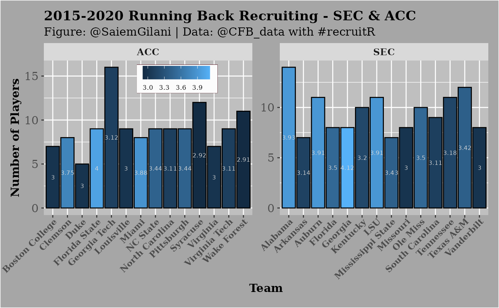

Running Backs Recruiting 2015-2020: SEC & ACC
This is a basic example which shows you how to solve a common problem:
if (!requireNamespace('pacman', quietly = TRUE)){
install.packages('pacman')
}
pacman::p_load_current_gh("saiemgilani/recruitR")
pacman::p_load(tidyverse)Let’s say that we are interested in seeing how teams in either the SEC or ACC fared in running back recruiting from 2015-2020. We could gather the information on each conference using the cfb_recruiting_position function, like so:
sec_positions <- cfbd_recruiting_position(start_year=2015,
end_year = 2020,
conference = 'SEC')
acc_positions <- cfbd_recruiting_position(start_year=2015,
end_year = 2020,
conference = 'ACC')
sec_rbs <- sec_positions %>%
dplyr::filter(position_group == "Running Back") %>%
dplyr::arrange(desc(avg_stars))
acc_rbs <- acc_positions %>%
dplyr::filter(position_group == "Running Back") %>%
dplyr::arrange(desc(avg_stars))
rbs <- dplyr::bind_rows(sec_rbs,acc_rbs)
print(rbs)## team conference position_group avg_rating total_rating commits
## 1 Georgia SEC Running Back 0.9420125 7.5361 8
## 2 Alabama SEC Running Back 0.9298214 13.0175 14
## 3 Auburn SEC Running Back 0.9115455 10.0270 11
## 4 LSU SEC Running Back 0.9257182 10.1829 11
## 5 Florida SEC Running Back 0.8969375 7.1755 8
## 6 Ole Miss SEC Running Back 0.8900500 8.9005 10
## 7 Mississippi State SEC Running Back 0.8826143 6.1783 7
## 8 Texas A&M SEC Running Back 0.8864250 10.6371 12
## 9 Kentucky SEC Running Back 0.8748000 8.7480 10
## 10 Tennessee SEC Running Back 0.8638636 9.5025 11
## 11 Arkansas SEC Running Back 0.8774571 6.1422 7
## 12 South Carolina SEC Running Back 0.8799889 7.9199 9
## 13 Missouri SEC Running Back 0.8418875 6.7351 8
## 14 Vanderbilt SEC Running Back 0.8454625 6.7637 8
## 15 Florida State ACC Running Back 0.9330555 8.3975 9
## 16 Miami ACC Running Back 0.9247875 7.3983 8
## 17 Clemson ACC Running Back 0.9161375 7.3291 8
## 18 NC State ACC Running Back 0.8917000 8.0253 9
## 19 Pittsburgh ACC Running Back 0.8815111 7.9336 9
## 20 Georgia Tech ACC Running Back 0.8474813 13.5597 16
## 21 North Carolina ACC Running Back 0.8687444 7.8187 9
## 22 Virginia Tech ACC Running Back 0.8571111 7.7140 9
## 23 Boston College ACC Running Back 0.8398143 5.8787 7
## 24 Duke ACC Running Back 0.8468600 4.2343 5
## 25 Louisville ACC Running Back 0.8541556 7.6874 9
## 26 Virginia ACC Running Back 0.8453714 5.9176 7
## 27 Syracuse ACC Running Back 0.8377333 10.0528 12
## 28 Wake Forest ACC Running Back 0.8381364 9.2195 11
## avg_stars
## 1 4.125000
## 2 3.928571
## 3 3.909091
## 4 3.909091
## 5 3.500000
## 6 3.500000
## 7 3.428571
## 8 3.416667
## 9 3.200000
## 10 3.181818
## 11 3.142857
## 12 3.111111
## 13 3.000000
## 14 3.000000
## 15 4.000000
## 16 3.875000
## 17 3.750000
## 18 3.444444
## 19 3.444444
## 20 3.125000
## 21 3.111111
## 22 3.111111
## 23 3.000000
## 24 3.000000
## 25 3.000000
## 26 3.000000
## 27 2.916667
## 28 2.909091Plotting the Running Backs
You can also create a plot:
ggplot(rbs ,aes(x = team, y = commits, fill = avg_stars)) +
geom_bar(stat = "identity",colour='black') +
xlab("Team") + ylab("Number of Players") +
labs(title="2015-2020 Running Back Recruiting - SEC & ACC",
subtitle="Figure: @SaiemGilani | Data: @CFB_data with #recruitR")+
geom_text(aes(label = round(avg_stars,2)),color="grey85",
size = 2.3, position = position_stack(vjust = 0.5))+
scale_color_gradient2(low = "red",midpoint = 3,mid = "blue",
high = "green",space="Lab")+
facet_wrap(~conference,ncol=2,scales='free')+
theme(legend.title = element_blank(),
legend.text = element_text(size = 7, margin=margin(t=0.2,r=3,b=0.2,l=3,unit=c("mm")),
family = "serif"),
legend.background = element_rect(fill = "grey99"),
legend.key.width = unit(.5,"cm"),
legend.key.size = unit(.5,"cm"),
legend.position = c(0.3, 0.88),
legend.margin=margin(t = 0.4,b = 0.4,l=0.1,r=2.7,unit=c('mm')),
legend.direction = "horizontal",
legend.box.background = element_rect(colour = "#500f1b"),
axis.title.x = element_text(size = 12, margin = margin(0,0,1,0,unit=c("mm")),
family = "serif",face="bold"),
axis.text.x = element_text(size = 9, margin=margin(0,0,1,0,unit=c("mm")),
face="bold",family = "serif", angle = 45, hjust = 1),
axis.title.y = element_text(size = 12, margin = margin(0,0,0,0,unit=c("mm")),
family = "serif",face="bold"),
axis.text.y = element_text(size = 12, margin = margin(1,1,1,1,unit=c("mm")),
family = "serif"),
plot.title = element_text(size = 14, margin = margin(t=0,r=0,b=1.5,l=0,unit=c("mm")),
lineheight=-0.5, family = "serif",face="bold"),
plot.subtitle = element_text(size = 12, margin = margin(t=0,r=0,b=2,l=0,unit=c("mm")),
lineheight=-0.5, family = "serif"),
plot.caption = element_text(size = 12, margin=margin(t=0,r=0,b=0,l=0,unit=c("mm")),
lineheight=-0.5, family = "serif"),
strip.text = element_text(size = 10, family = "serif",face="bold"),
panel.background = element_rect(fill = "grey75"),
plot.background = element_rect(fill = "grey65"),
plot.margin=unit(c(top=0.4,right=0.4,bottom=0.4,left=0.4),"cm"))